Tealbook
Product Strategy - Development Ops - Competitive Analysis - User Research - User Workshops - Prototyping - Interaction Design - Visual Design - Development
Tealbook
Product Strategy - Development Ops - Competitive Analysis - User Research - User Workshops - Prototyping - Interaction Design - Visual Design - Development

Tealbook connects companies so they can interact with more efficiency and trust. They capture, cleanse, enrich, automate and expand the supplier master to reduce the time and cost required to find one another for the purpose of doing better business.
In their current state Tealbook’s interface was full of features that didn’t apply to current user’s issues. They also had moved away from supporting their supplier users which had consequently turned away many users from using the platform. Tealbook needed to reconnect with their user base and start building a product that would help buyers collaborate within their organization and to eventually allow buyers and suppliers to start building long lasting business relationships.
I came to Tealbook to help strategize the next steps for rebuilding a new product for their buyer and supplier user base and to implement a sustainable development working methodology for our product team. Shortly after my arrival and the arrival of two new software developers we began discussing how we planned to carry out tasks as a product team. After much consideration I discussed how agile and scrum more specifically could help our team stay connected and also start delivering working software quickly so we could start testing and iterating based off of user feedback.
I took the initiative to set up and facilitate all scrum ceremonies including sprint setup (1 week sprints), daily standups, spring grooming, sprint planning, weekly demos and weekly retrospectives. We also took some time to understand as a team what each of these ceremonies meant and how we could use them to be more efficient. Having a process in place really helped our team have the confidence to deliver working software at the end of every week. Before we began working we had to align our product team with our executive team and their vision for Tealbook and their understanding of the current problem space.

During this exercise, internal stakeholders were told to first diverge and jot down what they believed were the goals for the second version of the product. Once they were done they were told to converge and bring their notes to the front to map into categories. They would later vote on which were the highest priorities.
As the Product Lead I had to first understand their market, stakeholder vision, and their user base before we began designing the new version of Tealbook. Amidst the work ahead of us we had an entirely new team that needed to understand how our stakeholders viewed the problem space and its users.
The first step was to run a design sprint with the entire product team. As I facilitated this workshop we had all internal executives come together to prioritize what our goals were as a company and what their goals were as individuals. We took time to understand what concerns the stakeholders had as well so we could determine how to evaluate success within the product from an internal perspective. All internal stakeholders worked together to prioritize what goals they wanted to accomplish moving forward. The following are the highest priority project goals.
1. Increase the number of qualified suppliers found in Tealbook so buyers can connect with suppliers easily and often. (Higher conversion rates on searches and VET searches)
2. Increase frequency of perceived value so we can drive user engagement within the platform.
Internal stakeholders had come up with many different target users. We were forced to narrow it down to a select few to focus on. This didn't mean that we would forget about all users but instead we would be focusing the majority of our attention to the highest priority users.
After we prioritized our project goals we worked on understanding who our key users are. The current Tealbook product already had an existing user base of both buyers and suppliers. This helped tremendously in understanding who we were trying to target and how we could aid in their day to day work life.
Once again as a group we came together to discuss who we believed who are target users were. Through long discussion and multiple sticky notes we found that there were many different types of users that we could target and/or continue to satisfy. We decided that it would be wise to narrow it down to two types that we would like to focus on. The following are the highest priority end-users.
1. Procurement professionals
2. Supplier Sales and Marketing
Understanding the main goals and concerns for our highest priority users really aided our release strategy moving forward.
Now that we had defined the two types of highest priority end-users we wanted to dig a bit deeper to understand what their goals and concerns were as individual. Through this exercise we wanted to see what motivates these users in their day to day jobs so that we can capitalize on those motivations to drive user retention. These were the highest priority goals for our two sets of users.
1. Procurement Professionals
a)Finding the right suppliers
b) Saving money (Increase competition and build relationships over time)
2. Supplier Sales and Marketing
a) Sales ^
b) Lead Generation and Visibility
Having both key end-users and their highest priority goals we could start to map out what a user journey could look like through the new and improved Tealbook but before we started to solution we wanted to better understand the current state of the product and how users currently felt.

Our internal stakeholders worked with our product team to map out journeys through the product for both highest priority users.
The current product did not have enough user retention and consisted of over extended user flows and unnecessary features. At the core it has several different pieces that sold the product to initial investors and power users so we decided to really dig deep into what attracted so many to the initial product. I organized a workshop for our internal stakeholders to map out what the journey through tealbook would look like for each of our key end-users trying to achieve their highest priority goals. Through this exercise we were able to pinpoint key areas where users had pain points, wins and areas in which we could build upon.
I turned this journey map into a story map with relevant tasks and activities so we could start adding user stories and releases for the development team. This was just enough to get us started but I wanted to test some of our assumptions about our users and the current product.

Digging deeper into our user journey we decided to list ares where there were pain points for the users currently. We also pinned areas in which we could capitalize on.
I began interviewing key users from our existing user base. Through these interviews I set out to understand how they felt about the current product and to see if their goals and concerns aligned with out assumptions. Through several rounds of user interviews i found that although happy our current Procurement user base wished that Tealbook could offer more relevant results within the product. Currently the product wasn’t doing that and they had to search outside of Tealbook. They really enjoyed our current process of gathering suppliers for requests for proposals although it did leave a bit to be desired.
Our supplier user base were mostly not happy with the current service. They felt that they weren’t getting what they had signed up for and there just wasn’t any visibility into how their company profile was being viewed amongst Procurement Professionals. They just wanted to know if anything was happening but currently we weren’t providing the with any transparency, just a profile editor and the ability to respond to an RFP.
These findings really aided us in validating our assumptions about our key end users and their goals and concerns. This would help guide most of our product output here onward. We would continue to support our existing user base with a series of workshops to understand how they currently complete their day to day tasks and how Tealbook could capitalize on their current pain points.
From a workshop at Biogen in Boston we decided to talk to several power users about their day to day activities. This allowed us to understand what they are looking for in a product and how we could take advantage of areas where there wasn't a good solution yet.
As the development team began setting up the codebase and other low risk parts of the application I started to look into high risk/reward areas of the application that were brought to my attention through our user journey exercise and the user interviews. I began by sketching out and breaking down the current information architecture of Tealbook. This involved removing and adding several new and improved areas within the product. The portion of the application that the supplier currently sees had a complete architecture rehaul.
 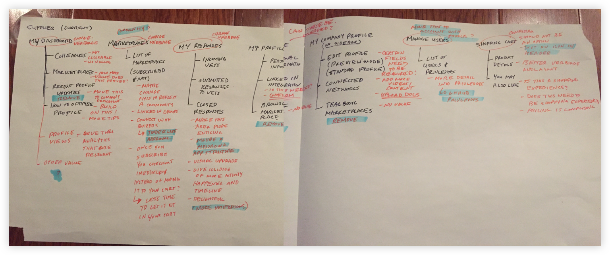
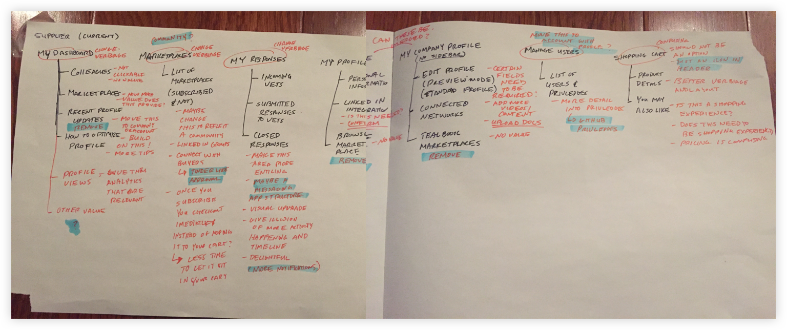
Breaking down the current product into a simple chart allowed us to easily pick apart areas that didn't make sense anymore or enhance and create better user flows.
Through the journey map we began to understand that Suppliers currently weren’t signing up properly and in turn not populating their supplier profile. This also creates a bit of a jarring experience for procurement professionals as well. I began sketching through the login and registration process and how that would help populate the profile. This felt like an easy way we could start making an impact within the product.
Our goal for creating a relevant supplier profile would push us to really think about which questions we were asking users during registration. This would play a large role in helping pre-populate the profile.


The registration for Tealbook is short and to the point. Only relevant questions are asked at this time and users can easily move forward or backward throughout the process. It also helps that the user can see how far along they are within the flow.
Populating supplier profiles were a quick win for our team and resonated with users immediately but we went further and began addressing Supplier concerns of profile visibility and differentiation. We wanted them to be able to upload items and fill in data that was unique like profile images, cover images, company specific information and much more.
Another important aspect of the supplier profile was to allow them to update diversity certification. Buyers usually have an allowance to spend on diverse suppliers. Giving these suppliers more visibility was also a top priority.
A supplier profile with even the most basic information is visually appealing to visiting users. Giving users the ability to further customize their profile has really helped them differentiate themselves from the competition.
 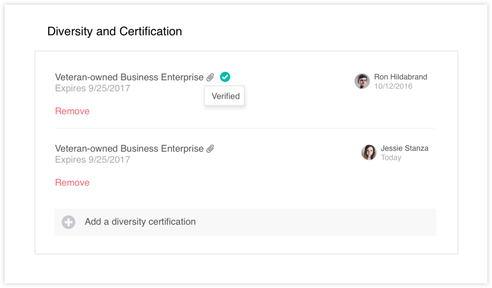
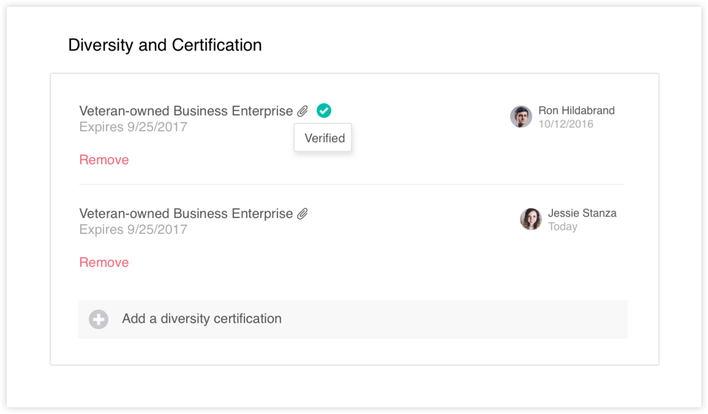
Users can add different tags for what they have done or what they are known for. Other users visiting their profile can endorse them. Users can also add different certification for diversity. This helps them show up in diversity related results and adds another layer of visibility in the product.
Buyers are our main users and through our exercises and user interviews we found that the biggest goal was for them to find the right supplier and to be able to start inviting them to possible RFP’s or even start a relationship. From this point onward we felt like this piece of information would really drive what we had in store for version 2.0. It would easily bring about a positive impact to our buyers and to our suppliers because it solves several concerns and completes several goals from each user based off of our research. Suppliers want more visibility within search results so I worked closely with our data scientist to make sure we could created the most relevant search results possible for our buyers.

We started with making sure our search was easy to use and was always returning relevant results.

Users can easily filter down if needed and dig deeper into supplier details before actually committing to leaving their search results.


Buyers can dig deeper into results to get the right amount of information they need to better understand a supplier. Buyers can also easily select a supplier to create a list an issue an RFP. They can also connect easily and add them to their list of supplier connections. This is filterable and easily accessible for when they need to work with this supplier again. If a search returns no results they have options to either search again or propose a supplier to our system. We are always looking to gain more suppliers.
We tried different methods and are currently coming up with more concepts on ways to create relationships in the application. We currently have messaging and that will help open up communication lines amongst the two users. With messaging we can allow buyers and supplier to communicate within our system and hopefully set up long lasting relationships with out the dependency on searching.
 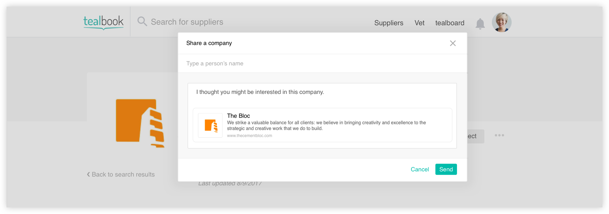
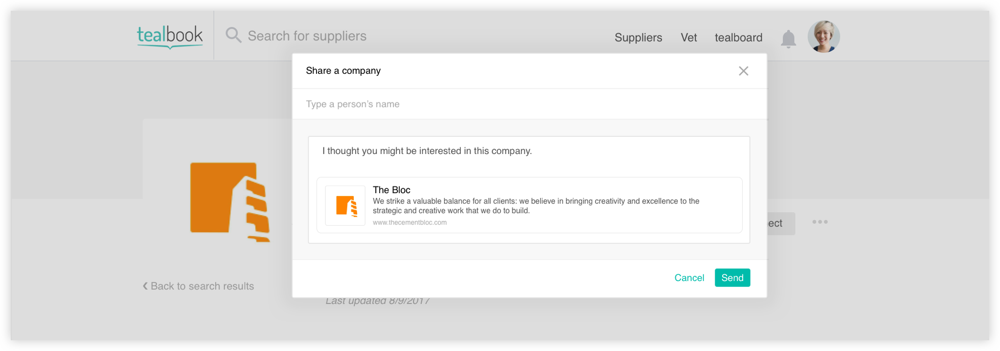
With messaging we can allow buyers and supplier to communicate within our system and hopefully set up long lasting relationships with out the dependancy on searching. This also allows for the option for buyers to have discussions amongst themselves about potential work partners.
Creating a news feed is another concept we have explored and will be releasing to beta for some users. This will allow them to post content, view content and interact with content across different channels.
We are hoping that through the sharing of relevant content we can get some sort of interaction between both parties. This way we can actually start forming groups or communities.
 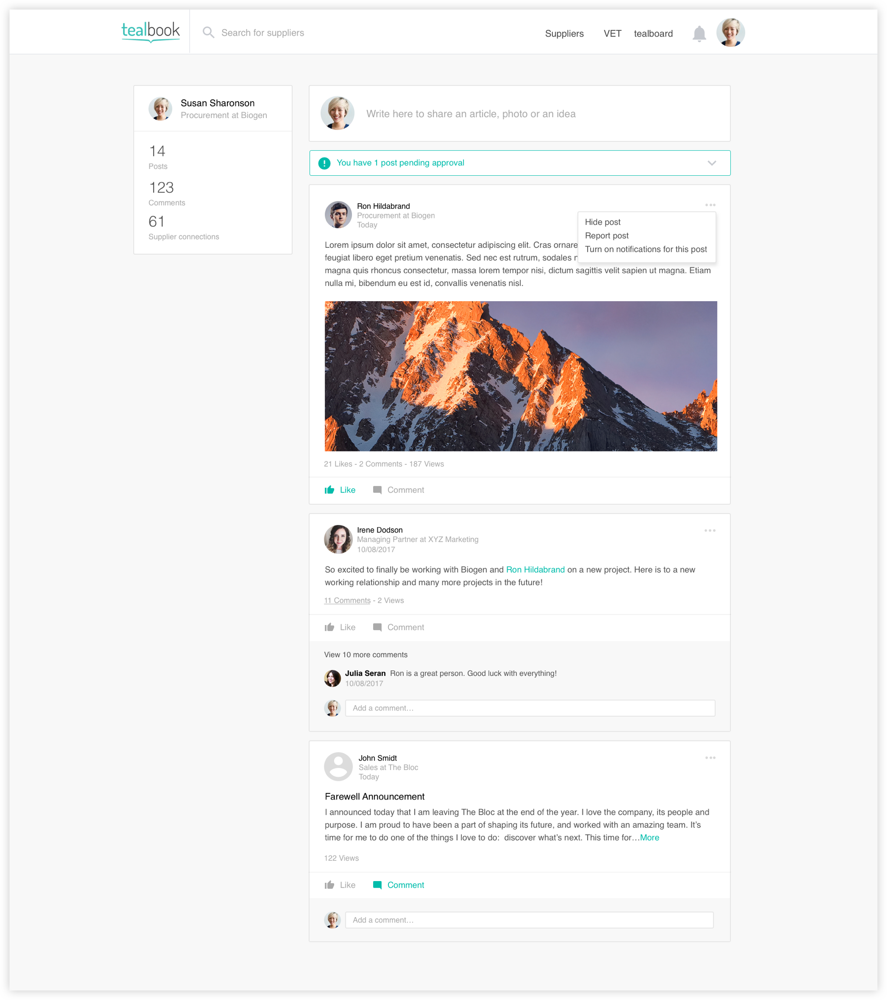
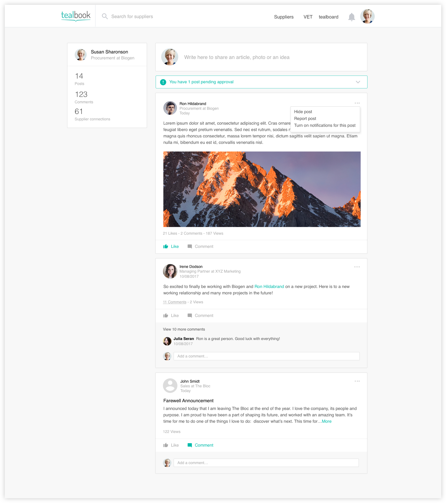
Users can see some statistics from their post history and are able to access user profiles from an individual’s post. They can comment, like and in the future, possibly share. We wanted to create a medium where people can build relationships and this is the first test in doing that.
 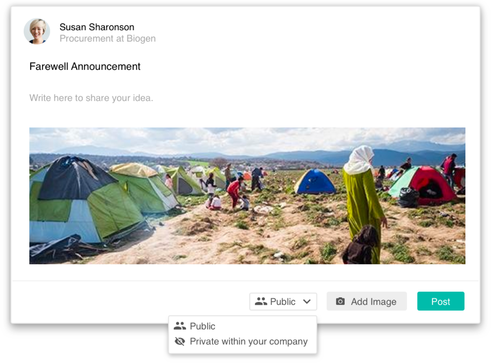
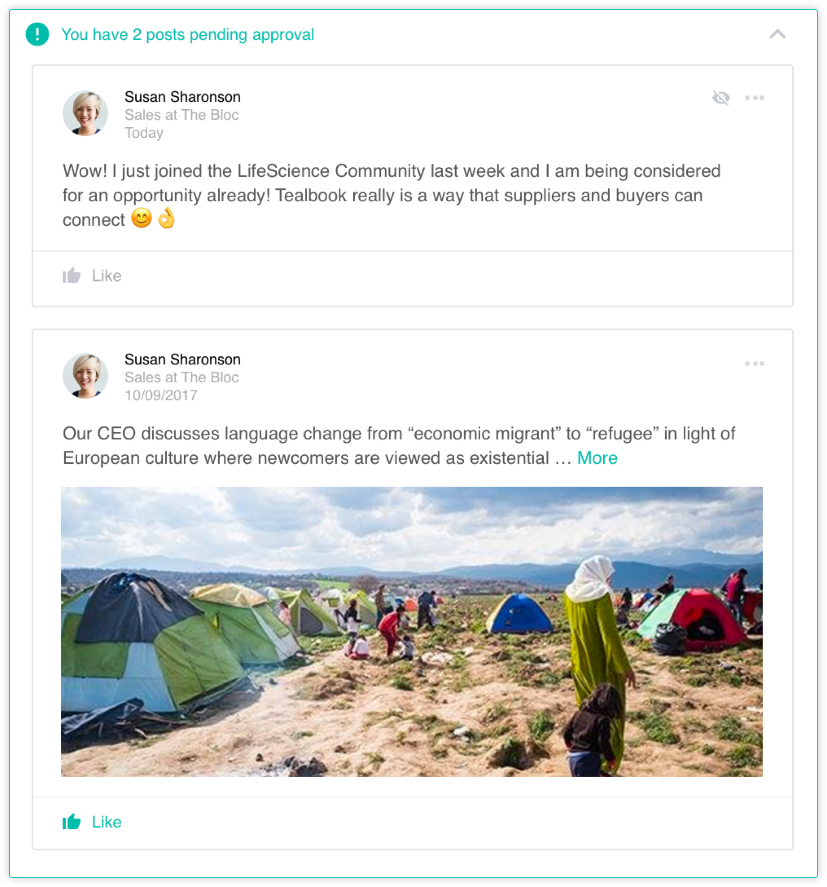
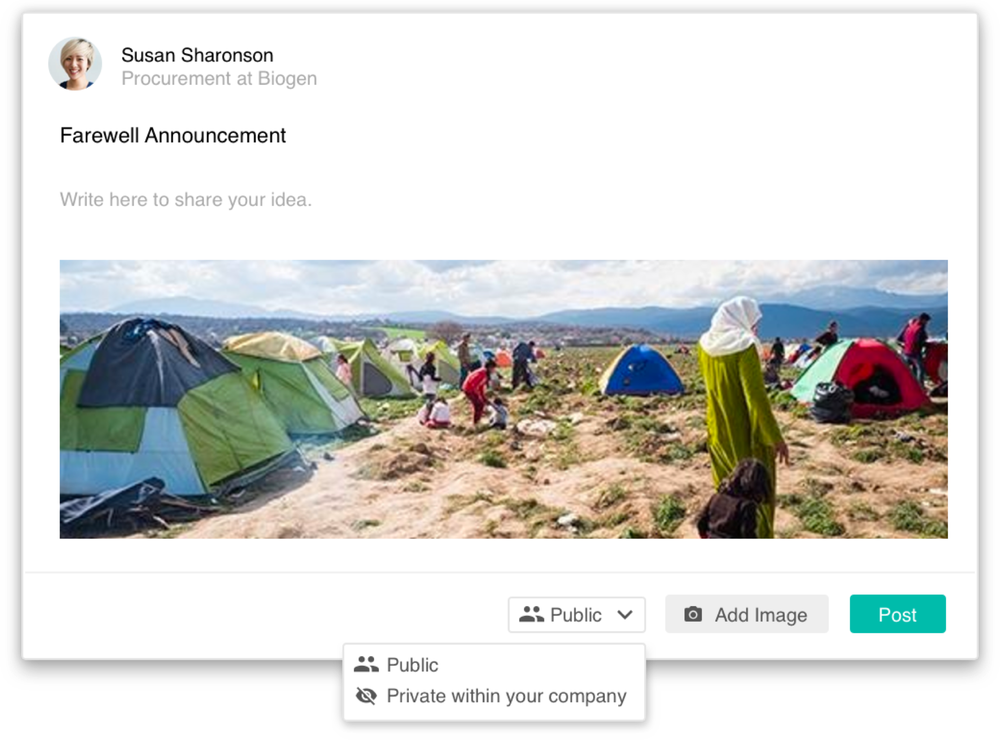
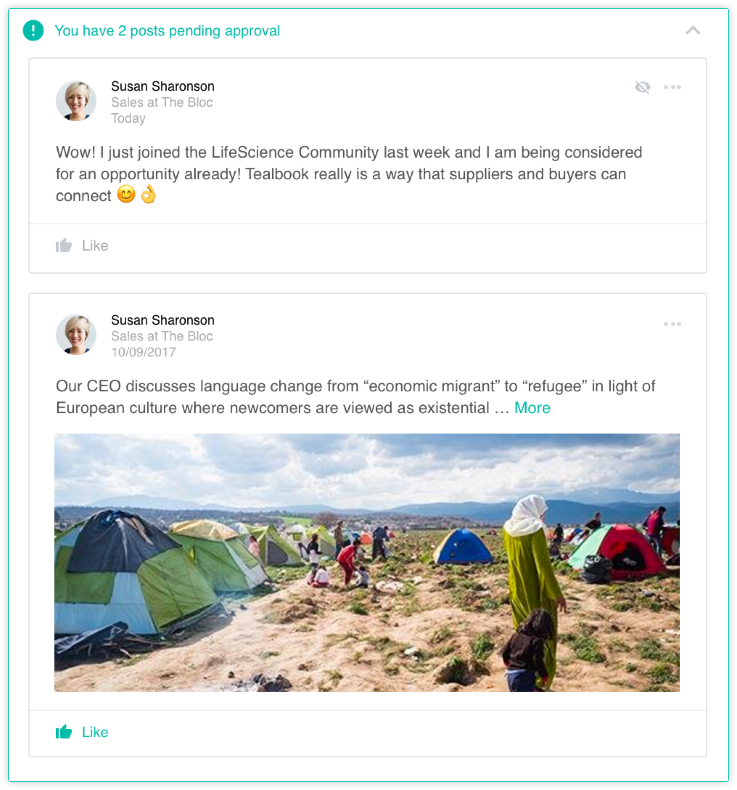
We are hoping that through the sharing of relevant content we can get some sort of interaction between both parties. This way we can actually start forming groups or communities.
Using stakeholder alignment to drive change
Vitamin Shoppe
2017

Ridesharing for the people
Arcade City
2016

Building confidence in our userbase through research
Thyssenkrupp Elevator
2016

Find, view, and share interesting articles
Ebbu
2015
A storytelling experience
Massively
2015